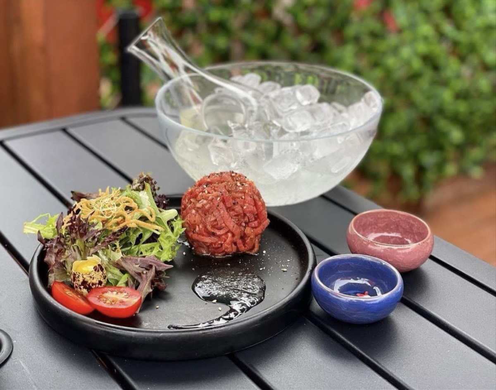
01 · House signature
Mikaku Beef Tartare $21.99
One of the best Korean beef tartare in Toronto.
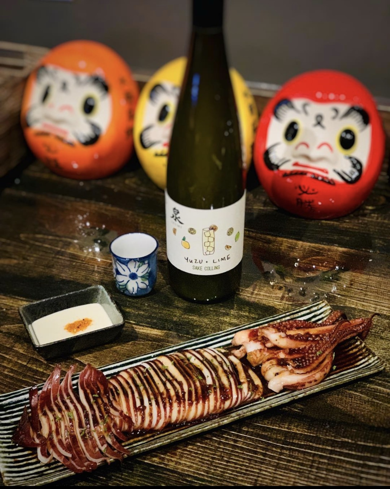
A small, loud, glowing izakaya in North York. Japanese bar plates with a Korean accent and seven pages of sake.
Mikaku is the izakaya you end up at after work, after the movie, after everywhere else has closed. Shareable plates come out fast, sake gets poured generously, and the daruma dolls watch over all of it.
Our kitchen cooks Japanese bar food the way we like to eat it: smoky, buttery, a little spicy, and built to share.
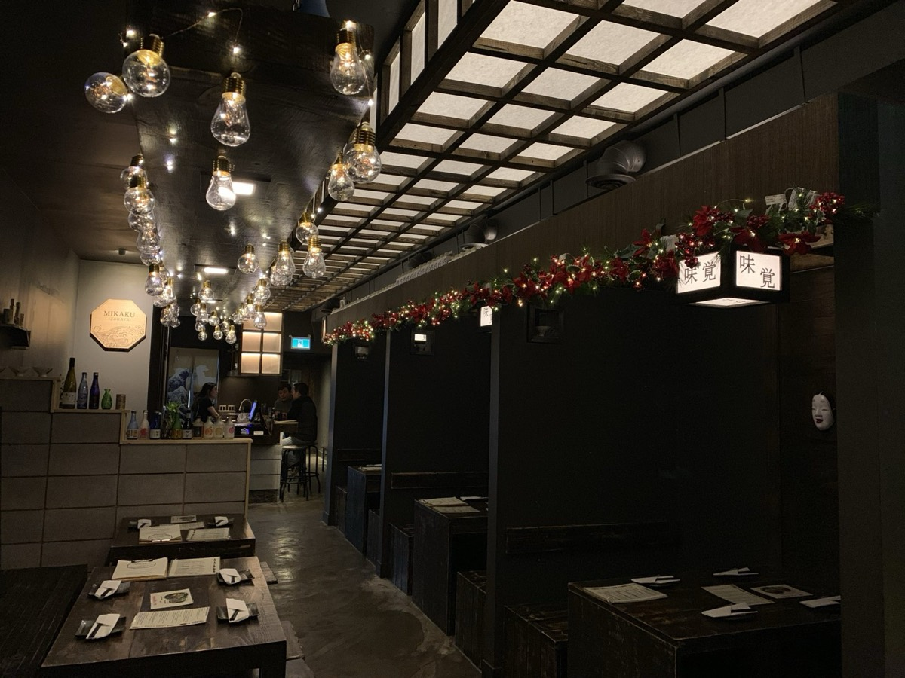
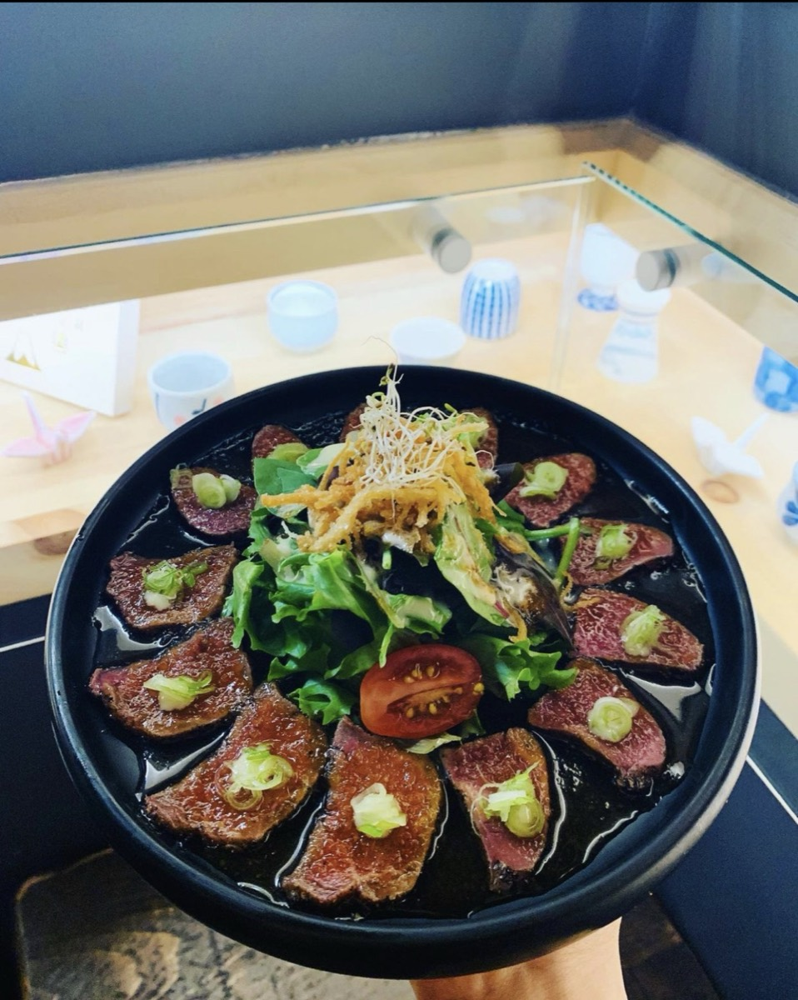
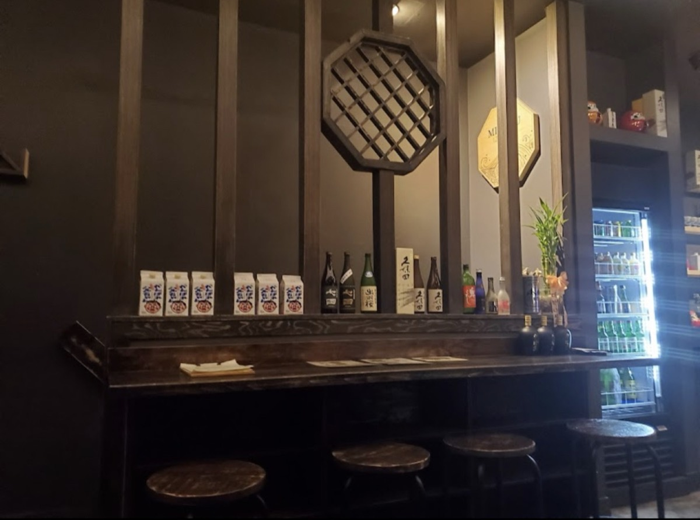
Not sure where to start? Tell your server what you like and they'll pour you something. Or pick a mood:
“Be prepared to wait… but MAN is it worth the wait.”
We're cozy, which means it fills up fast on weekends. Book ahead, or grab a seat at the bar, which has no time limit.
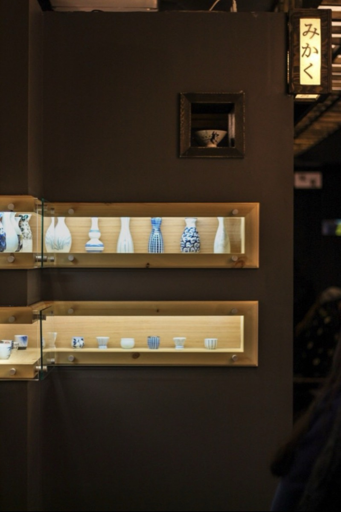
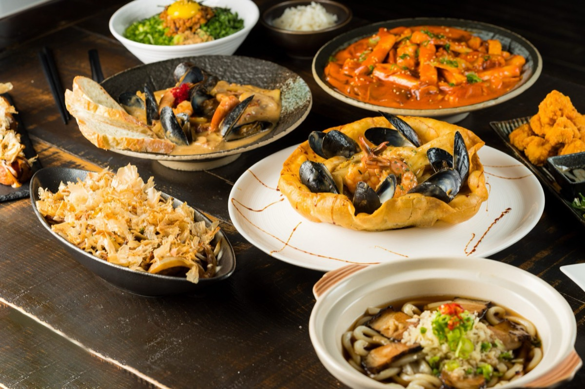
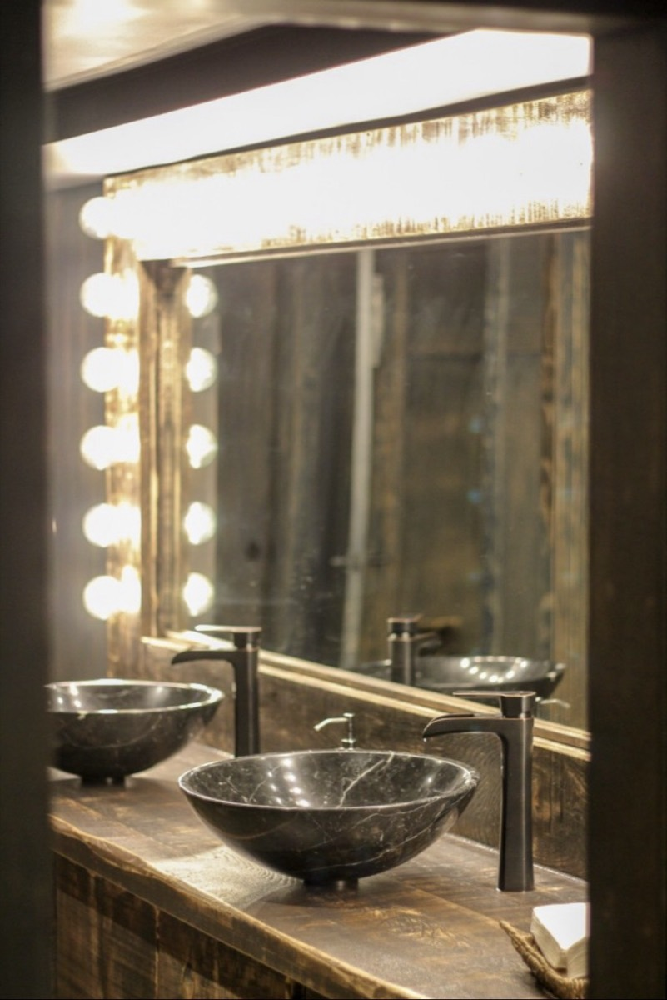
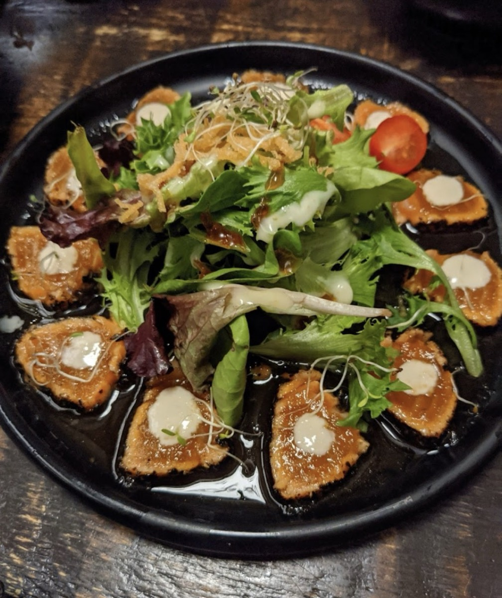
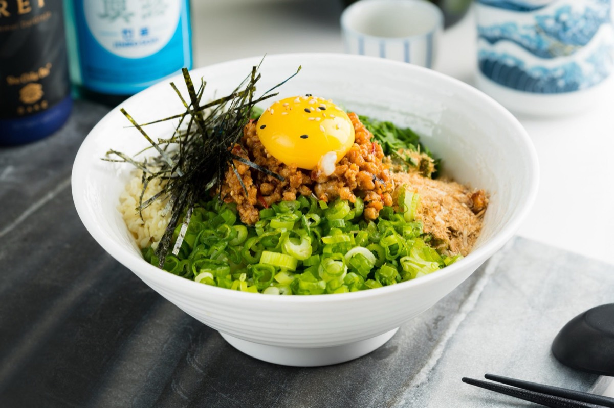
Shoes off, sit low. Ask for it when you book a group.
No time limit at the bar, unlike the tables.
Open until 2:30am, six nights a week.
Small lot out front, easy to miss. Street parking nearby.
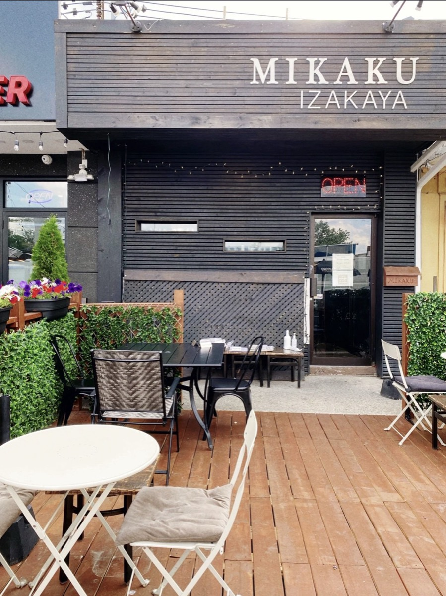
Look for the black awning6180 Yonge St · just north of FinchGet directions →